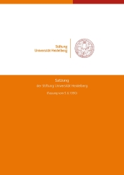

“Whenever a person, the economy or the state falls into crisis, university knowledge promises help – and from this follow financial consequences.”
Paul Kirchhof, 1997 (translated)
The Stiftung Universität Heidelberg has set itself the task of improving, through financial investment, the conditions for increasing and sharing university knowledge in Heidelberg. It therefore supports Ruprecht-Karls-Universität, its members and institutions in fulfilling their many tasks in research and teaching.

The foundation is an independent foundation under civil law. It pursues exclusively and directly charitable purposes. Its aims are laid down in the statutes, which also describe the tasks of its two bodies, the Board and the Board of Trustees (Kuratorium).